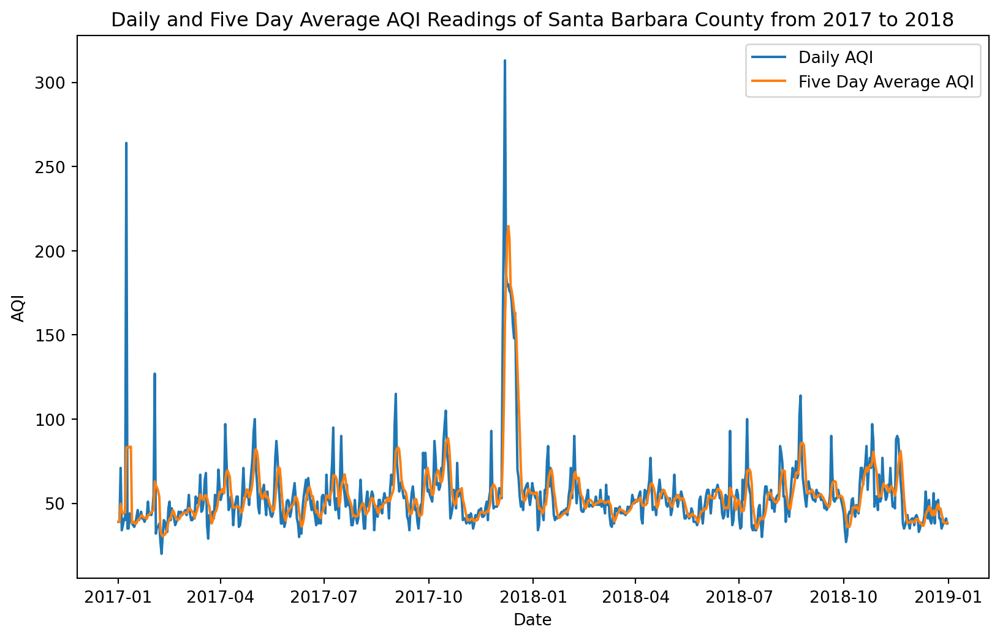

The following analysis was done in two-fold. Its purpose is to get a better understanding of the 2017 Thomas Fire that affected Ventura and Santa Barbara Counties. The first part shows the process of producing a graph that shows how the average air quality was affected, and the second part visualizes the region of fire through a false imagery map.
Highlights
Using rioxr to import the landsat data and access its attribute
Visualizing both true and false color images
Combining two different datasets to make one map
About the Data
The landsat data comes from Microsoft Planetary Computer Data Catalogue, and it is a simplified collection of colored bands. It was processed to remove data outside land and coarsen the spatial resolution.
The Thomas Fire boundary was created in the previous notebook by filtering a California Fire perimeter file available from the US Government Data Catalogue.
References
Microsoft Planetary Computer Data Catalogue, Landsat collection 2 Level-2 [Data file] Available from: https://planetarycomputer.microsoft.com/dataset/landsat-c2-l2. Access date: November 23, 2024.
Data.gov Data Catalogue, California Fire Perimeters (all) [Data file] Available from: https://catalog.data.gov/dataset/california-fire-perimeters-all-b3436. Access date: November 23, 2024.
Import Libraries
Show code
import pandas as pdimport geopandas as gpdimport osimport matplotlib.pyplot as pltimport rioxarray as rioxrfrom shapely.geometry import box # To create polygon bounding boxpd.set_option("display.max.columns", None) # To see all columns
Load Data
# 2017 and 2018 AQI Data # aqi_17 = pd.read_csv('data/daily_aqi_by_county_2017.zip', compression ='zip')aqi_18 = pd.read_csv('data/daily_aqi_by_county_2018.zip', compression ='zip')# Landsat Data # # Make a root pathroot = os.path.join('/','courses','EDS220','data','hwk4_landsat_data')# Make a filepathfp = os.path.join(root,'landsat8-2018-01-26-sb-simplified.nc')# Use both root and file paths to import the landsat filelandsat = rioxr.open_rasterio(fp)# Thomas Fire Boundary #thomas_fire_boundary = gpd.read_file(os.path.join('data', 'thomas_fire_boundary.shp'))
Santa Barbara AQI Analysis
Data Cleaning and Manipulation
Show code
# Combine 2017 and 2018 data into one dataframeaqi = pd.concat([aqi_17, aqi_18])# Clean column namesaqi.columns = (aqi.columns .str.lower() .str.replace(' ','_') )# Select for Santa Barbara county and remove unneccessary columnsaqi_sb = aqi[aqi['county_name'] =='Santa Barbara'].drop(columns = ['state_name', 'county_name', 'state_code', 'county_code'])# Convert date to datetime objectaqi_sb.date = pd.to_datetime(aqi_sb.date)# Change the index to the dataaqi_sb = aqi_sb.set_index('date')# Calculate AQI rolling average over 5 daysaqi_sb['five_day_average'] = aqi_sb.rolling('5D').aqi.mean()
Visualize AQI
Show code
# Set figure sizefig, ax = plt.subplots(figsize=(10, 6))ax.plot(aqi_sb.index, aqi_sb.aqi, label='Daily AQI')ax.plot(aqi_sb.index, aqi_sb.five_day_average, label='Five Day Average AQI')ax.set_xlabel('Date')ax.set_ylabel('AQI')ax.set_title('Daily and Five Day Average AQI Readings of Santa Barbara County from 2017 to 2018')ax.legend()
<matplotlib.legend.Legend at 0x7fed0cae2250>

Thomas Fire False Color Imagery Map
Data Cleaning and Manipulation
Show code
# Remove length 1 dimensions (band)landsat = landsat.squeeze()# Remove coordinates associated to band dimensionlandsat = landsat.drop_vars('band')# Check that it workedprint(landsat.dims, landsat.coords)
# Visualize the red, green, blue variableslandsat[['red', 'green', 'blue']].to_array().plot.imshow()
Clipping input data to the valid range for imshow with RGB data ([0..1] for floats or [0..255] for integers).
<matplotlib.image.AxesImage at 0x7fed0c11b790>
This first attempt at visualizing the landsat data didn’t work quite right because it is showing up in black and white. Let’s change the robust parameter to account for the clouds’ RGB outlier values throwing off the plot.
# Visualize the red, green, blue variables and adjust robust parameter landsat[['red', 'green', 'blue']].to_array().plot.imshow(robust =True)
<matplotlib.image.AxesImage at 0x7fed0bc71bd0>
The first attempt showed up in black and white. By just changing the one parameter of robust, the plot now shows a true color image. The robust parameter essentially changed the colormap range so that the extremes aren’t included. Because the clouds were affecting our first map, turning on robust changes that.
False Color Image
Instead of using the usual RGB (red, green, blue) colors, let’s switch them to make a false color image and better visualize the area that was affected by the fire.
# Visualize the swir22, nir, red variables and keep robust = Truelandsat[['swir22', 'nir08', 'red']].to_array().plot.imshow(robust =True)
<matplotlib.image.AxesImage at 0x7fed0bca2290>
False Color Image Map
Create a map using the false color image that was made above and the Thomas fire perimeter.
CRS Manipulation
Because we’re combining two geodata files, we must ensure the CRSs match.
# View each CRS (add code fold here)print('Thomas Fire CRS: ', thomas_fire_boundary.crs)print('landsat CRS: ', landsat.rio.crs)
Thomas Fire CRS: EPSG:3857
landsat CRS: EPSG:32611
# Change Thomas Fire boundary to match the landsat crs thomas_fire_boundary = thomas_fire_boundary.to_crs(landsat.rio.crs)# Add a check to make sure it worked (if it didn't an error would produce)assert thomas_fire_boundary.crs == landsat.rio.crs
Plot Map
Show code
# Required to put the figures on one mapfig, ax = plt. subplots() # Plot the false color image as it was earlierlandsat[['swir22', 'nir08', 'red']].to_array().plot.imshow(robust =True, ax = ax)# Plot the Thomas Fire perimeter(only)thomas_fire_boundary.boundary.plot(ax=ax, edgecolor ="darkred", linewidth =1, label ="Thomas Fire Perimeter")# Add legendax.legend(loc='upper right')# Turn off the axesplt.axis(False)# Add Titleplt.title("False Color Image Map of the 2017 Thomas Fire")# Gets rid of the text that shows up over the map of the annotationplt.show()
Figure Description: This is a map of Santa Barbara County in the year 2017. It features a layer on top of it that shows the border of the Thomas Fire. This map uses false color imagery (occurs when you replace the original RGB colors with other ones of your choosing. In this instance, instead of red we used short-wave infrared(swir22), instead of green we used near-infrared(nir08), and instead of blue we used red. By doing this, the map clearly shows where the Thomas Fire is. When comparing it to the true color image, you cannot really tell that the region of the Thomas Fire was different. The included border also helps to distinct the fire from the rest of the county.